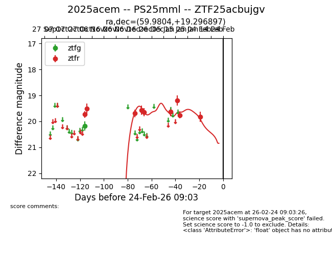
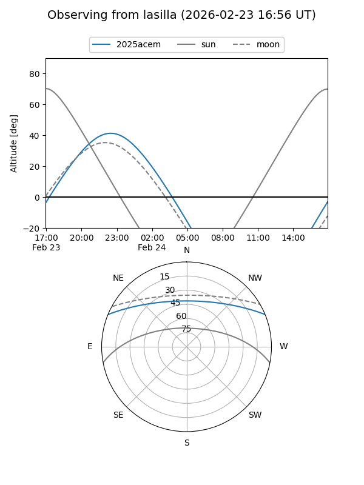
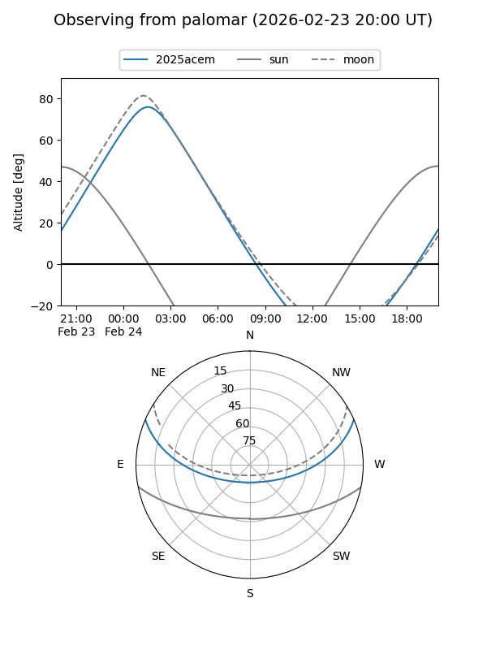
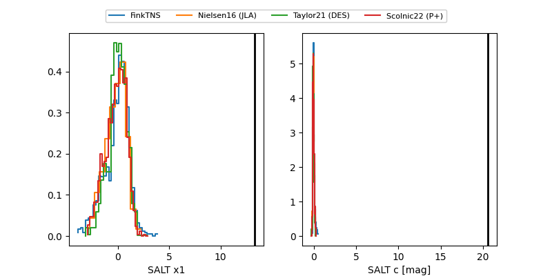

2025acem
Target 2025acem at 2026-01-21 07:41
Aliases and brokers:
FINK: link
Lasair: link
ALeRCE: link
TNS: link
YSE: link
alt names
ZTF25acbujgv (ztf,fink_ztf)
2025acem (tns,yse)
PS25mml (panstarrs)
Coordinates:
equatorial (ra, dec) = 59.9804,+19.29690
equatorial (HMS+DMS) = 03:59:55.29,+19:17:48.83
galactic (l, b) = (172.6120,-24.89057)
Flags:
Photometry:
last ztfg=20.18, ztfr=19.76
1 ztfg, 8 ztfr detections
Lightcurve

Visibility


Additional plots
